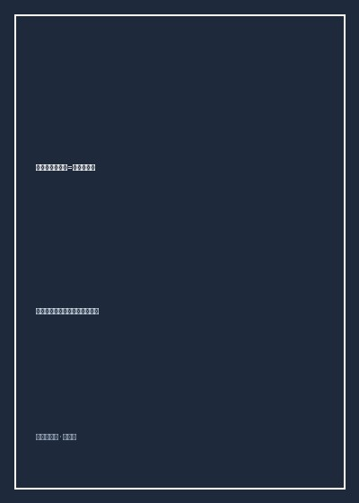

不为设计而设计最好的设计

总体观点
在现代商品社会充斥着过剩的视觉符号、浮夸造型与无休止消费刺激的浪潮中，日本当代顶级设计大师们发起了一场深刻的美学追问。《不为设计而设计最好的设计》由空间设计泰斗内田繁发起，集结了原研哉、隈研吾、深泽直人等大师的高峰对谈与哲学思辨。
全书的核心灵魂在于打破将设计视为“加法造型、炫耀技巧”的西方现代主义窠臼，回归东方传统的“无”与“留白”。大师们深刻指出：真正最高明的设计，应当如同空气与清泉一样自然存在，让使用者在使用过程中几乎察觉不到设计者的刻意介入；器物与空间应当谦逊退后，成为托举人类舒适生活、静心冥想的温润背景。这是一部直指造物本质的东方设计哲学经典。
核心观点
-
1. 白与虚空：在“一无所有”中孕育无限可能
东方美学中的“白”并非单一物理色彩，而是一种虚空、容器与容纳所有人想象与情感投射的空灵场域。
原研哉在谈及无印良品理念时指出，空无一物的极简包装不是廉价缺乏设计，而是如同一面明镜，让消费者将自己的生活哲学投射其中。 -
2. 去设计化：让物品的痕迹自然消融于使用情境中
优秀的器物应当顺应人体的无意识习惯，无需阅读繁复说明书，身体自会感知其最舒适的握持方式。
内田繁设计的一把木椅，摒弃了一切繁杂雕花与夸张弧度，仅以最质朴的榫卯与原木触感贴合脊椎，坐上去让人瞬间忘却椅子的存在。 -
3. 传统手工艺与现代工业理性的精神和解
机械大批量制造消灭了人手的温度，但盲目复古又无法服务现代大众，必须将传统工匠对材质的敬畏融入工业模具中。
将日本传统漆器与竹编工艺中的微小公差哲学引入现代电子产品外壳打磨，使冰冷的塑料外壳具备如玉般温润细腻的触感。 -
4. 弱建筑与负设计：退让自然的大地伦理
建筑与造物不应狂妄征服环境或成为地标性巨物，而应顺应地形水气退让隐匿，将主角位置还给天地自然。
隈研吾阐述其“负建筑”理念：选用当地泥土、竹子与杉木构筑外墙，让光线穿透格栅在室内投射斑驳树影，实现建筑与森林的无缝融合。 -
5. 在过度消费时代重构“刚刚好”的节制幸福感
幸福不在于占有堆积如山的冗余物品，而在于日常每一件所用之物都恰如其分、经久耐用且互相信任。
倡导用一件能陪伴自己三十年的优质陶碗替换十个廉价塑料碗，在岁月的包浆与微小磕碰中见证生命与器物的共同成长。
全书思维导图 · 知识脉络树
全书结构
-
第一章 设计的原点：从“无”中诞生的美学
追溯日本自千利休茶道以来的“侘寂”（Wabi-Sabi）基因，探讨“白”与虚空如何构筑东方美学根基。
解析日本传统茶室两叠半（极小空间）的哲学隐喻，在最极端的简朴中唤醒感官对一朵插花与一缕水汽的极致敏锐。 -
第二章 日常的察觉：居所、空间与身体尺度
深入住宅设计、室内空间与家具陈设，探讨如何通过视线高度与光影流动安顿疲惫的现代心灵。
内田繁分享如何利用和纸拉门（障子）柔和过滤刺眼日光，让幽暗角落中浮现出古典物哀之美。 -
第三章 材质的呼吸：竹木陶石的自然对话
大师们品评木材纹理、粗陶肌理与生铁质感，反思塑料与金属冷漠异化对人类感官的钝化。
展示一件经过百年烟熏的古民家榉木梁柱改造的长桌，木质表面的温润油脂记录着几代人的生活温度。 -
第四章 无为而治：不为设计的造物之境
剖析“无意识设计”（Without Thought）与日常行为的共鸣，让功能隐于形态之后达到天然自足。
深泽直人剖析带凹槽的雨伞手柄设计，人们会自然而然将塑料袋挂在凹槽上，印证设计与直觉行为的天然吻合。 -
第五章 亚洲的未来：走向循环与自足的文明
站在全球化与环境危机路口，展望东方古老生态智慧对二十一世纪全球工业设计范式转变的深远启示。
探讨可持续循环经济下材料可降解与本土化取材的未来范式，为喧嚣的后工业文明开出一剂宁静解药。